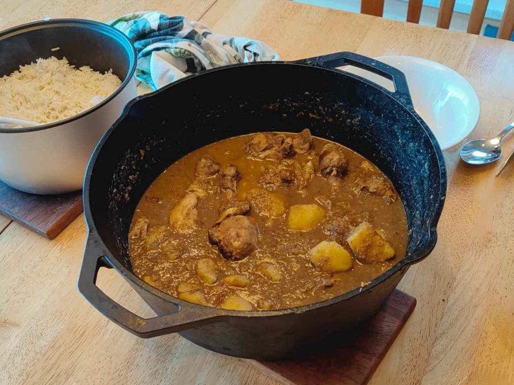

Coastal India
Goan Cuisine
450 years of Portuguese rule, folded into a Konkani coastal tradition and preserved in the name of a single dish.
450 years of Portuguese rule, folded into a Konkani coastal tradition and preserved in the name of a single dish.
Goa was a Portuguese colony from 1510 until 1961 for roughly 450 years, making it by far the longest continuous European colonial presence anywhere in India (British rule, by comparison, lasted under 200 years). That duration matters: it gave Portuguese ingredients and techniques time to genuinely integrate into local cooking rather than sit alongside it, producing a cuisine that is authentically both Konkani coastal and Portuguese-Iberian at once, rather than one simply borrowing from the other.
The clearest evidence is sitting in plain sight in the name of Goa's best-known dish. Vindaloo derives from the Portuguese carne de vinha d'alhos - meat marinated in wine (vinho) and garlic (alhos), which is a preservation technique Portuguese sailors used for meat on long sea voyages. In Goa, wine vinegar was often substituted or supplemented with local palm vinegar, garlic remained central, and chili (a Portuguese-introduced New World import) was added, turning a shipboard preservation method into one of India's most recognizable curries. The dish's name is, essentially, a 500-year-old linguistic fossil.
Goa's food culture, like Rajasthan's, really contains two distinct traditions, here split along religious lines. Goan Catholic cuisine, the community most directly shaped by Portuguese conversion and rule, centers on pork, beef, and vinegar-based dishes like vindaloo and sorpotel, alongside Portuguese-derived desserts like bebinca, a rich layered coconut-and-egg cake. Goan Hindu (particularly Saraswat Brahmin) cuisine stayed closer to the broader Konkani coastal tradition: fish, coconut, and kokum, with far less Portuguese influence and no pork or beef. Both are unambiguously Goan; they simply come from different communities within the same 450-year colonial history.
Goa's port role also made it one of the entry points through which New World crops like chilies, potatoes, tomatoes, and cashews first reached the Indian subcontinent via Portuguese trade routes after 1510, before spreading into the rest of Indian cooking over the following centuries. The cashew in particular took root so successfully in Goa's soil that it's now used to distill feni, the region's signature spirit.
